Windows 7: The Best Windows Yet
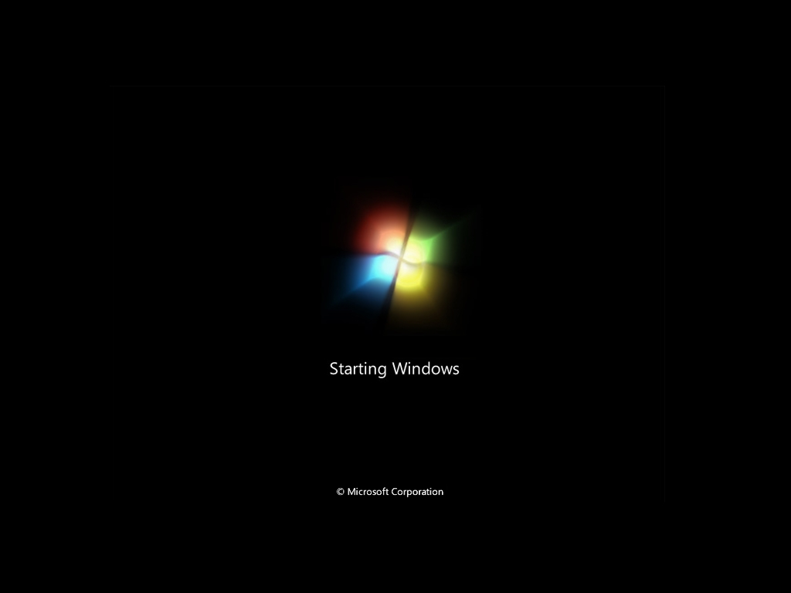 The Windows 7 boot screen. It’s an animated glowing flag.
Windows 7 is the best Windows yet, I mean it. I haven’t personally checked the resource consumption in relation to XP, but everything is fast and responsive. I still don’t believe the boot time, it’s way faster than XP at any rate. I’m not going to explain all of Windows 7’s features as there are many blogs out there describing Windows 7 in excruciating detail, but I’ll focus on the features I truly find helpful.
Explorer (Libraries)
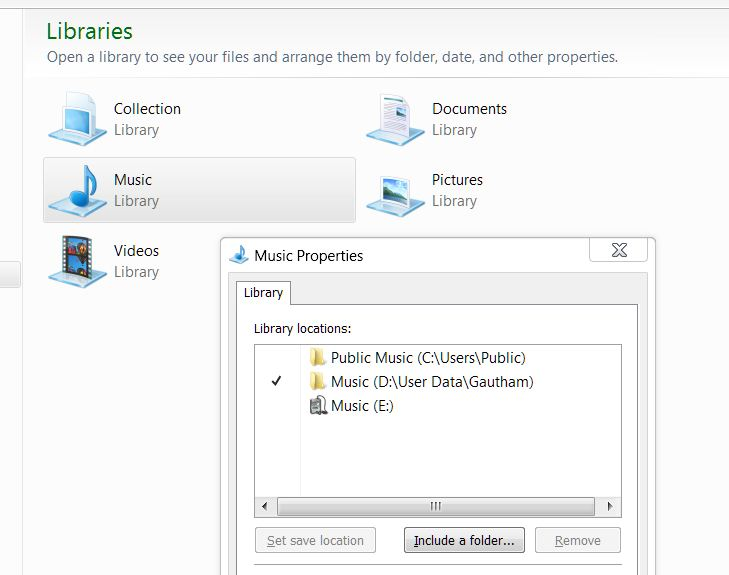 Notice the “Collection” Library, which I added myself.
This is a replacement for the “My Documents” feature in XP and Microsoft did a great job. The old scheme forced me to save my documents in the specified folders to take advantage of the integrated ease of access (like the buttons on Start and file save dialogs). This time, there’s no limitation on the number of locations I want to classify as “My Documents”. I can simply define a new “Library” and include as many folders as I want! For example in my “Music” library, I have 3 locations included: the default Windows location for music (Users/[username]/My Music), shared music, and the location I have on another partition where I keep my music collection. Including the default Windows location is not mandatory, which I consider a very good thing. Same rules apply for Pictures, Videos and other pre-defined categories. Oh, and these categories are not set in stone, you can create and edit liraries as you see fit (notice the “Collection” library in the picture). Pretty neat, right?
Explorer (Navigation Pane)
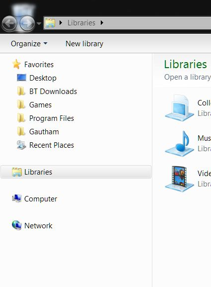 BT Downloads, Games, Program Files, etc. are my entries. I just draged them there.
Windows Explorer has never been better and my most favourite feature is the Navigation Pane. It’s the pane on the left of every window which has contains four fields, namely Favourites, Libraries, Computer, Network. Of course, there’s complete drag-and-drop support here, so you can easily add any frequently visited location to the Favourites list. I find this very very useful in everyday browsing and file management activities.
Superbar
The new taskbar, besides looking very good, has some nifty features added. For instance, the Quick Launch toolbar has been removed completely, replaced by the ability to “pin” your favourite applications. I have Media Player, Firefox and Explorer pinned, and it’s very nice. When I click on Media player, it opens on that button instead of opening separately, saving valuable space. Additionally, when I hover on the button, the preview pop-up displays some simple controls (namely Previous, Play/Pause and Next). This partially removes the need for the Windows Media Player toolbar that came with WMP11.
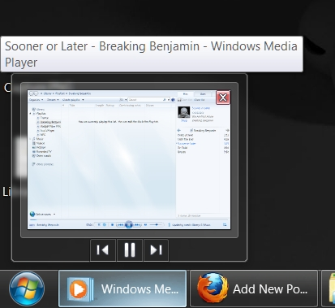 The controls partially reduce the need to maximize media player everytime.
Superbar (Buttons)
All buttons belonging to an application are grouped together, and each application group can be dragged and rearranged on the taskbar. Though, I don’t think I can rearrange the buttons of the same application, which is a little disappointing. You must be wondering why I’m so bothered about saving space when everyone knows Seven has no text associated with taskbar icons, leaving much space on the taskbar. Those of you who like text labels with icons on their taskbar will be delighted to know this can be easily enabled in the settings. You can customize this in the “Taskbar buttons” drop-down list (circled in green in the picture). Also, if you don’t like the large taskbar, you can change the setting easily to restore the good old slim taskbar, just tick the “Use small icons” option (circled in blue in the picture).
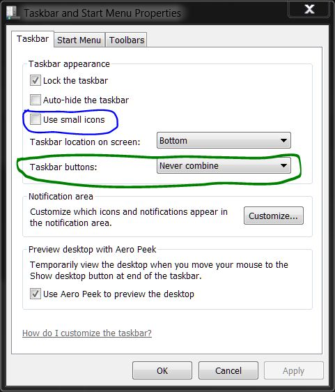 I quickly made this screenshot with the Snipping tool, including the coloured lines.
Superbar (Jump List)
When you right-click a taskbar button, you’ll notice that the “menu” has been polished up quite a bit. This new menu is called a Jump List, which does quite a lot besides housing the three common items (recent files opened with that application, the application name, “Pin/Unpin this program to/from taskbar” and “Close window”). For explorer (basically any folder), you have the “Pinned” list. You can quickly pin any of these places and they get added to the Pinned list, which is probably the quickest way to access your most frequented places on your computer. For Media player, the jump list has the “Frequent” and “Tasks” groups. The Frequent list contains- you guessed it, frequently opened files (including playlists). The Tasks list contains “Resume previous playlist” and “Play all music”. The options in the jump list also depends on the applications. For example, while Explorer and Media Player have the useful options I mentioned above, Firefox has only the three default items. So jump lists can do a lot if programs can take advantage of them.
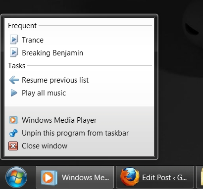
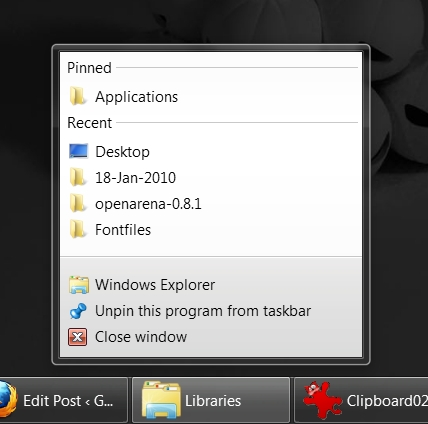
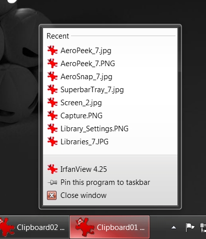
Superbar (Tray)
With the taskbar that large, both time and date are displayed at the same time which I find useful. The icons on the system tray for default Windows stuff (like Volume and Action Center) are greyscale, so besides being clearly and unobtrusively visible, they go well with any theme. Speaking of tray icons, the “Show hidden icons” button doesn’t expand on to the taskbar but opens a pop-up. Now, I can’t really say this is particularly useful as I’m still having a hard time letting go of my old habit. I say this is more of a change than a useful feature. (I got the widgets in this picture from the Windows Live gallery. Note that most widgets for Vista work in Seven.)
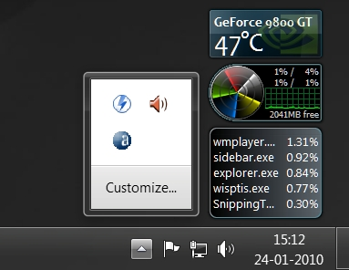 “Show hidden icons” pop-up.
Superbar (Glow and Fill)
The superbar features some awesome glow and fill effects. When I hover my mouse over a taskbar button, a glow appears and it follows the mouse movement. It gives a really soft look. The most intriguing aspect (to me) is the color of the glow, which matches the color of the icon of the button we’re hovering over. For Firefox, the glow is a saturated orange. For Irfanview, it’s red, for explorer, it’s yellow. Really nice.
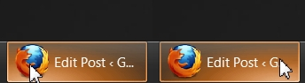 The glow follows the mouse pointer. The colour is set to the most prominent colour of the icon, orange in this case.
For most programs having a progress bar, Seven makes it very easy to keep track of the progress. It does this by showing the progress in the taskbar button. You’ll most likely notice this first when you copy or move a file, the taskbar button shows the progress. I use Teracopy and Winzip and the fill works for both, very cool.
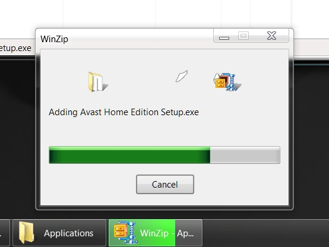 The taskbar button indicates the progress of compression. Of course, this also works with the Winzip window minimized.
Aero Peek
The Show Desktop button has been moved to the right extreme of the taskbar. It was a bit weird for me in the beginning as I was used to the button being in the Quick Launch, but I came to love it this way. The bottom-right point of the screen shows the desktop, it saves the trouble of locating the Show Desktop button among the clutter of buttons near the Start button. Just slide your mouse in the direction and hit the left mouse button and viola! When you hover on the button, you get to “peek” on the desktop. It’s not particularly useful (unless maybe you use widgets), but it’s pretty neat. During a peek, all the visible windows will be represented by their borders.
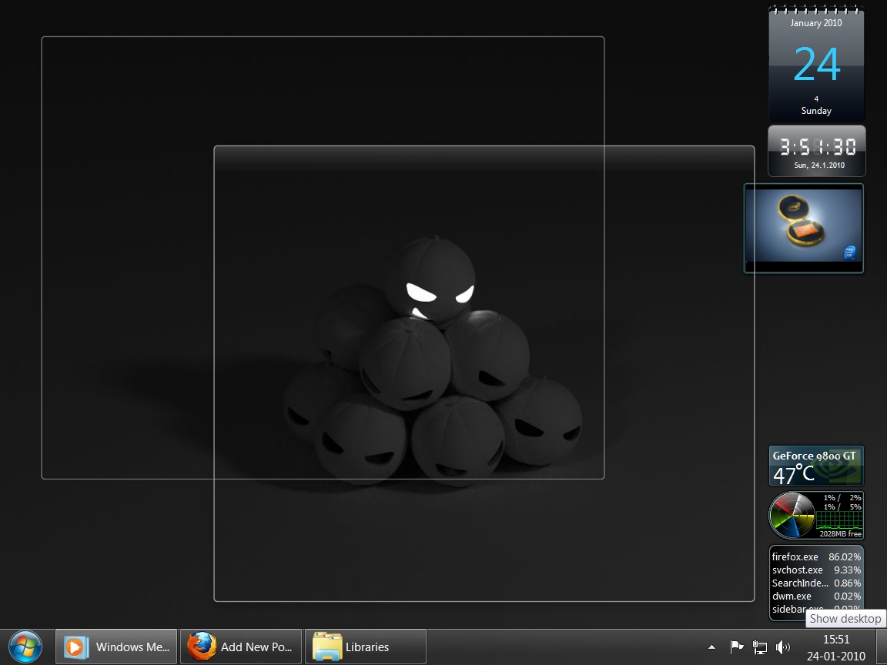 Hover the mouse pointer over the bottom-right corner to peek at your desktop.
Aero Snap
Aero Snap snaps a window when you drag it to the top, left or right edges of the screen. Drag to the top and the window maximizes. Drag to either side and the window fills that half of the screen. This is pretty useful when you’re managing files between windows. You can also drag the windows off the edges and they assume their former size.
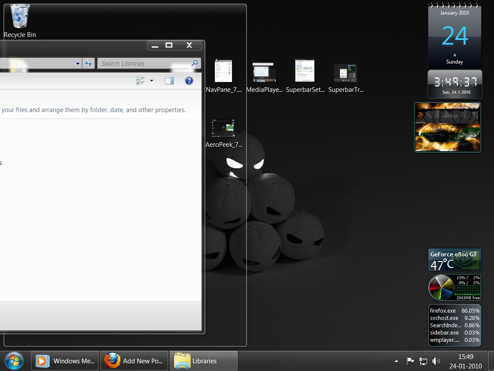 Drag a window to top, left or right edge of the screen to snap it there.
Task Manager
I noticed two new useful additions to the Task Manager. One is the “Open File Location” option in the right-click menu of the Process list. This helps to a considerable degree in troubleshooting problems. The other is a new tab for the running services. This hasn’t been very useful to me, but I do use it once in a while, and I think it’s nice to have easy access to starting and stopping services. I’m not sure if these features have been introduced from Vista, I didn’t get to use it much and I don’t know.
I’m sure I’m missing some things (like the Snipping Tool which I find useful sometimes), but I think I’ll end the post here. But before I go, here’s a screenshot of my desktop:
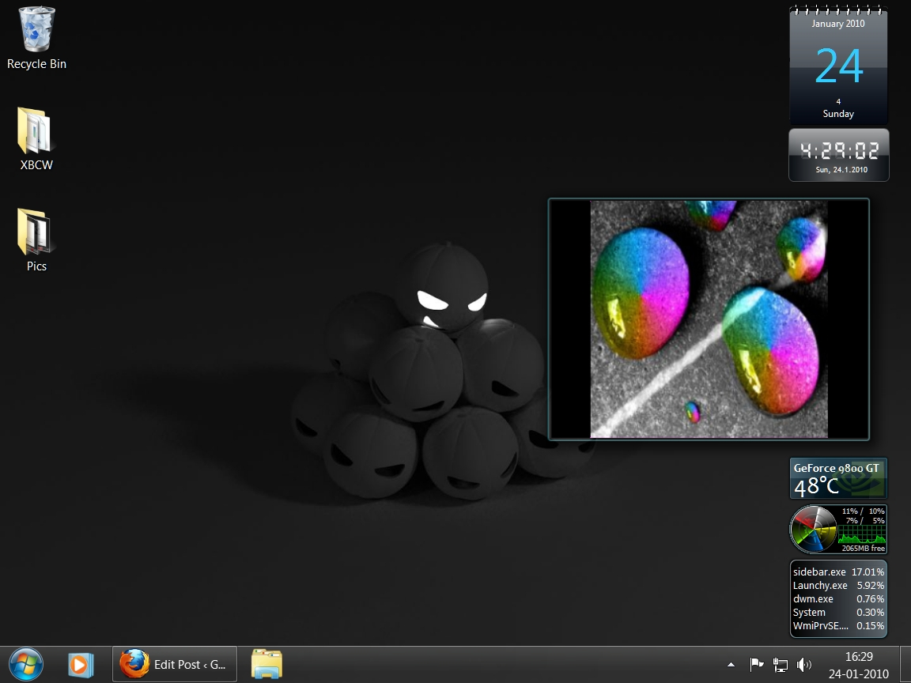 To get gadgets, visit the Windows Live gallery (or use Google). Note that most gadgets made for Vista should work in Seven. (I modded the code in the slideshow gadget to accept a list of directories instead of just one :sunglasses: )